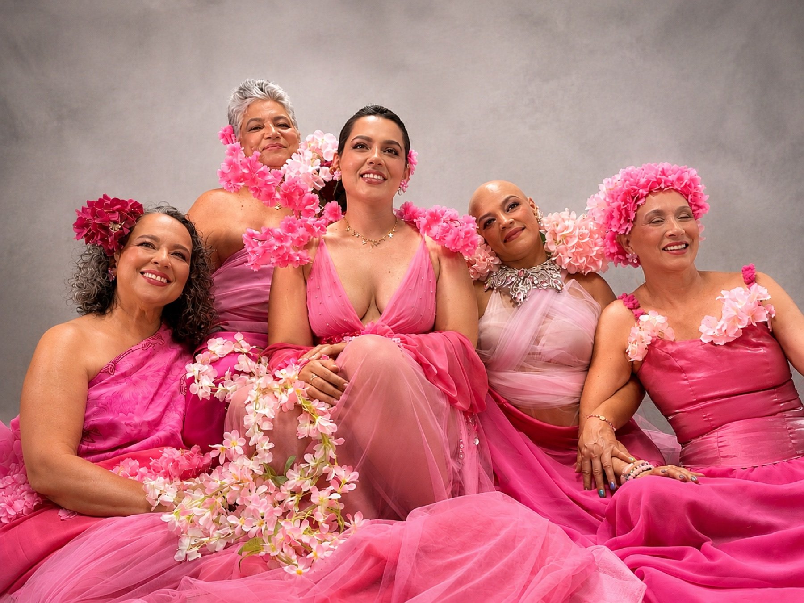
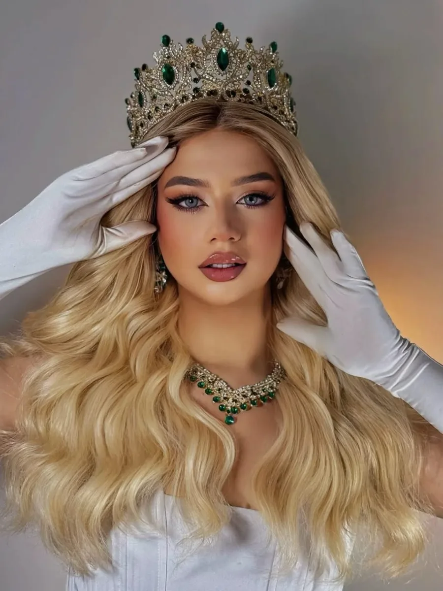
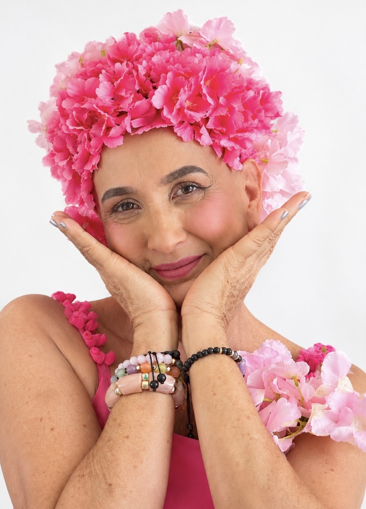

Somos un movimiento de impacto social que nace de una convicción: todos tenemos algo que aportar para construir una sociedad más solidaria, inclusiva y humana.
Movimiento de impacto social
Una corona puede inspirar.
Un propósito puede transformar vidas.

Creemos que la verdadera belleza también se refleja en lo que hacemos por los demás. Desde Colombia, convertimos la visibilidad en oportunidades para ayudar, conectar personas y acompañar causas que merecen ser escuchadas.
Detrás de cada causa hay personas que deciden involucrarse.
Una intención que se convierte en acción.

Quién lo lidera
Kalanhy Esmeralda Gil
Este movimiento surge de su deseo de darle un propósito social a los espacios de visibilidad, las experiencias y las conexiones que se construyen a lo largo del camino.

Creemos que representar una corona también implica reconocer las realidades de los demás, escuchar sus historias y utilizar las oportunidades para acercar a las personas a causas que necesitan apoyo.
Participamos en iniciativas de acompañamiento a mujeres, proyectos comunitarios, acciones orientadas al acceso al agua potable y actividades que promueven la inclusión, el bienestar y las oportunidades para niños, jóvenes y poblaciones vulnerables.
MujeresComunidadesAgua potableInclusiónNiños y jóvenes
No trabajamos solos. Creemos en las alianzas, en el voluntariado y en la capacidad de las personas y organizaciones para unir esfuerzos alrededor de objetivos comunes.
No buscamos ser protagonistas de las causas, sino contribuir a que quienes las viven y trabajan por ellas encuentren más espacios, más apoyo y más oportunidades.
Descubre lo que hacemosPropósito · Misión · Visión
Lo que nos guía.
01
Nuestro propósito
Promover acciones de impacto social mediante el acompañamiento humano, la colaboración y la articulación de personas, organizaciones y empresas comprometidas con el bienestar de las comunidades.
02
Misión
Impulsar y acompañar iniciativas sociales que contribuyan al bienestar de las mujeres, los niños, los jóvenes y las comunidades vulnerables, promoviendo la solidaridad, la inclusión y el trabajo colaborativo como herramientas para generar oportunidades y transformar realidades.
03
Visión
Consolidarnos como un movimiento de impacto social reconocido en Colombia por su capacidad de conectar personas, movilizar voluntades y construir alianzas que permitan desarrollar iniciativas sostenibles en beneficio de las comunidades.
Nuestra esencia.
01 / 04
Humanidad
Escuchar, comprender y acompañar a las personas desde el respeto y la empatía.
02 / 04
Solidaridad
Reconocer que cada aporte puede convertirse en una oportunidad para alguien más.
03 / 04
Colaboración
Construir alianzas y conectar capacidades para alcanzar objetivos comunes.
04 / 04
Compromiso
Convertir las buenas intenciones en acciones responsables y sostenidas.
Una corona con propósito. Una comunidad que transforma.
Desde Colombia, conectamos voluntades, con la posibilidad de construir alianzas en otros territorios.